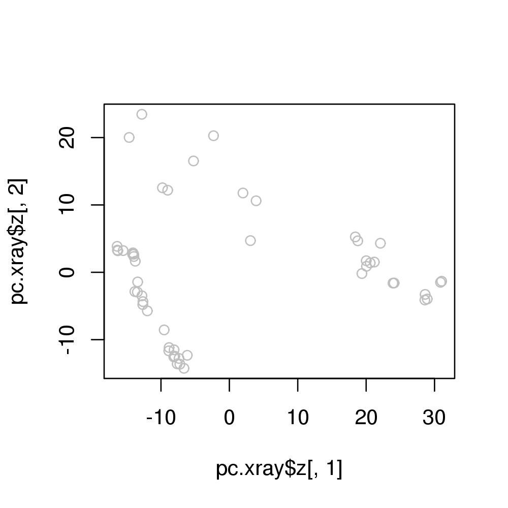
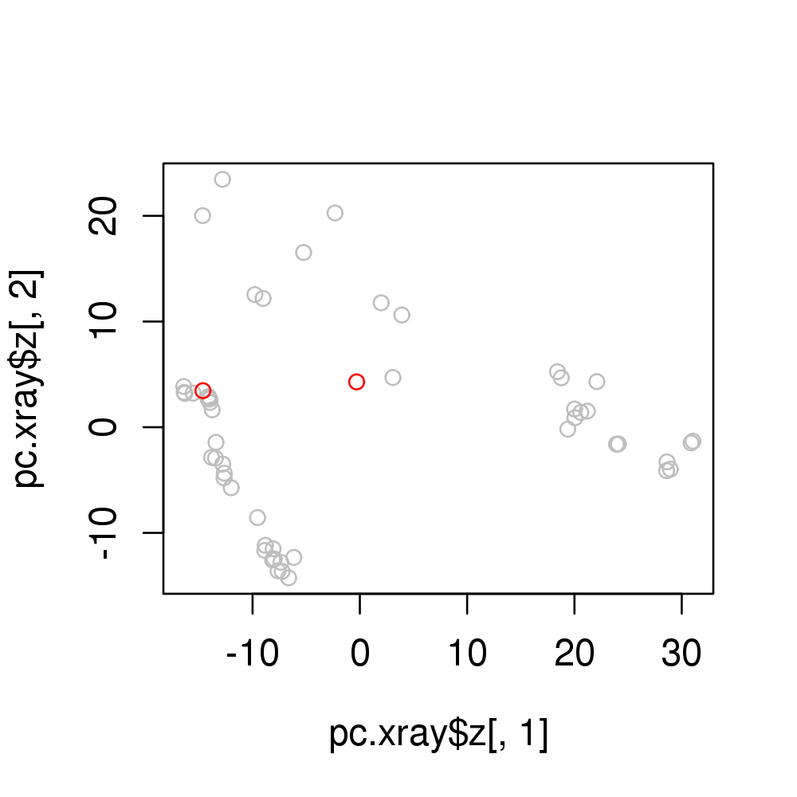

pca.project(data, pca, angular = FALSE, fit = FALSE, ...) pca.z2xyz(z.coord, pca) pca.xyz2z(xyz.coord, pca)
"pca" as obtained from
functions pca.xyz or pca.tor. pca$mean. fit.xyz. Projects data onto principal components.
A numeric vector or matrix of projected PC scores.
Grant, B.J. et al. (2006) Bioinformatics 22, 2695--2696.
data(transducin) attach(transducin, warn.conflicts=FALSE) gaps.pos <- gap.inspect(pdbs$xyz) #-- Do PCA without structures 2 and 7 pc.xray <- pca.xyz(pdbs$xyz[-c(2,7), gaps.pos$f.inds]) #-- Project structures 2 and 7 onto the PC space d <- pca.project(pdbs$xyz[c(2,7), gaps.pos$f.inds], pc.xray) plot(pc.xray$z[,1], pc.xray$z[,2],col="gray")
points(d[,1],d[,2], col="red")
detach(transducin)